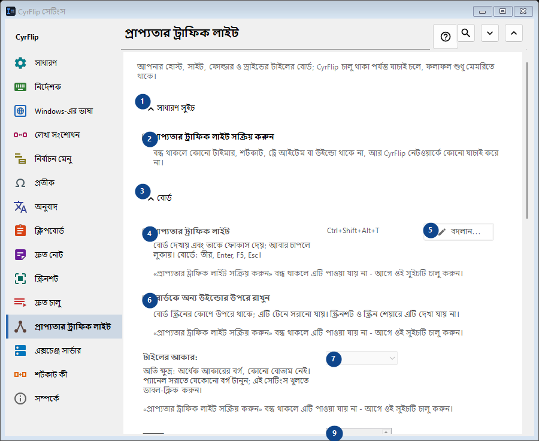
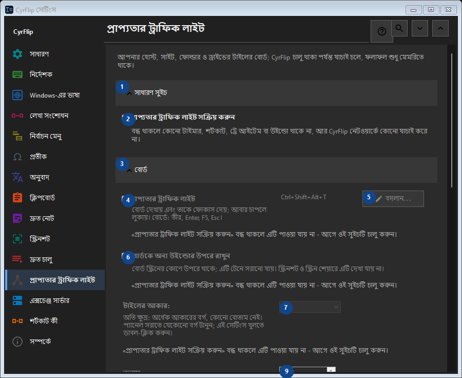

প্রাপ্যতার ট্রাফিক লাইট
এর কাজ
আপনার হোস্ট, সাইট, ফোল্ডার ও ড্রাইভের টাইলের বোর্ড; CyrFlip চালু থাকা পর্যন্ত যাচাই চলে, ফলাফল শুধু মেমরিতে থাকে।


ব্যবহারের ক্রম
সেটিং সঙ্গে সঙ্গে প্রয়োগ হয়। নির্দিষ্ট ক্রম নেই; নিচের দলগুলি ব্যবহার করুন।
উপাদান
1. সাধারণ সুইচ
উল্লিখিত কাজের জন্য এই নির্দেশ ব্যবহার করুন। মেনে নেওয়ার আগে নিশ্চিতকরণ পড়ুন।
আপনার শর্টকাট2. প্রাপ্যতার ট্রাফিক লাইট সক্রিয় করুন
বন্ধ থাকলে কোনো টাইমার, শর্টকাট, ট্রে আইটেম বা উইন্ডো থাকে না, আর CyrFlip নেটওয়ার্কে কোনো যাচাই করে না।
আপনার শর্টকাট3. বোর্ড
উল্লিখিত কাজের জন্য এই নির্দেশ ব্যবহার করুন। মেনে নেওয়ার আগে নিশ্চিতকরণ পড়ুন।
আপনার শর্টকাট4. প্রাপ্যতার ট্রাফিক লাইট
«প্রাপ্যতার ট্রাফিক লাইট সক্রিয় করুন» বন্ধ থাকলে এটি পাওয়া যায় না - আগে ওই সুইচটি চালু করুন। এই উপাদান এখন উপলব্ধ নয়। আগে বৈশিষ্ট্য চালু করুন বা একটি এন্ট্রি বাছুন।
আপনার শর্টকাট5. বদলান - প্রাপ্যতার ট্রাফিক লাইট
«প্রাপ্যতার ট্রাফিক লাইট সক্রিয় করুন» বন্ধ থাকলে এটি পাওয়া যায় না - আগে ওই সুইচটি চালু করুন। এই উপাদান এখন উপলব্ধ নয়। আগে বৈশিষ্ট্য চালু করুন বা একটি এন্ট্রি বাছুন।
আপনার শর্টকাট6. বোর্ডকে অন্য উইন্ডোর উপরে রাখুন
«প্রাপ্যতার ট্রাফিক লাইট সক্রিয় করুন» বন্ধ থাকলে এটি পাওয়া যায় না - আগে ওই সুইচটি চালু করুন। এই উপাদান এখন উপলব্ধ নয়। আগে বৈশিষ্ট্য চালু করুন বা একটি এন্ট্রি বাছুন।
আপনার শর্টকাট7. টাইলের আকার
«প্রাপ্যতার ট্রাফিক লাইট সক্রিয় করুন» বন্ধ থাকলে এটি পাওয়া যায় না - আগে ওই সুইচটি চালু করুন। এই উপাদান এখন উপলব্ধ নয়। আগে বৈশিষ্ট্য চালু করুন বা একটি এন্ট্রি বাছুন।
আপনার শর্টকাট8. কলাম
«প্রাপ্যতার ট্রাফিক লাইট সক্রিয় করুন» বন্ধ থাকলে এটি পাওয়া যায় না - আগে ওই সুইচটি চালু করুন। এই উপাদান এখন উপলব্ধ নয়। আগে বৈশিষ্ট্য চালু করুন বা একটি এন্ট্রি বাছুন।
আপনার শর্টকাট9. «প্রাপ্যতার ট্রাফিক লাইট সক্রিয় করুন» বন্ধ থাকলে এটি পাওয়া যায় না - আগে ওই সুইচটি চালু করুন।
পাশের লেবেল অনুযায়ী মান বাছুন বা লিখুন। এগোনোর আগে পরীক্ষা করুন। এই উপাদান এখন উপলব্ধ নয়। আগে বৈশিষ্ট্য চালু করুন বা একটি এন্ট্রি বাছুন।
আপনার শর্টকাট10. বোর্ড উইন্ডোর স্বচ্ছতা
«প্রাপ্যতার ট্রাফিক লাইট সক্রিয় করুন» বন্ধ থাকলে এটি পাওয়া যায় না - আগে ওই সুইচটি চালু করুন। এই উপাদান এখন উপলব্ধ নয়। আগে বৈশিষ্ট্য চালু করুন বা একটি এন্ট্রি বাছুন।
আপনার শর্টকাট11. বোর্ড দেখান
«প্রাপ্যতার ট্রাফিক লাইট সক্রিয় করুন» বন্ধ থাকলে এটি পাওয়া যায় না - আগে ওই সুইচটি চালু করুন। এই উপাদান এখন উপলব্ধ নয়। আগে বৈশিষ্ট্য চালু করুন বা একটি এন্ট্রি বাছুন।
আপনার শর্টকাট12. লক্ষ্য
উল্লিখিত কাজের জন্য এই নির্দেশ ব্যবহার করুন। মেনে নেওয়ার আগে নিশ্চিতকরণ পড়ুন।
আপনার শর্টকাট13. ঠিকানা
«প্রাপ্যতার ট্রাফিক লাইট সক্রিয় করুন» বন্ধ থাকলে এটি পাওয়া যায় না - আগে ওই সুইচটি চালু করুন। এই উপাদান এখন উপলব্ধ নয়। আগে বৈশিষ্ট্য চালু করুন বা একটি এন্ট্রি বাছুন।
আপনার শর্টকাট14. যোগ করুন
«প্রাপ্যতার ট্রাফিক লাইট সক্রিয় করুন» বন্ধ থাকলে এটি পাওয়া যায় না - আগে ওই সুইচটি চালু করুন। এই উপাদান এখন উপলব্ধ নয়। আগে বৈশিষ্ট্য চালু করুন বা একটি এন্ট্রি বাছুন।
আপনার শর্টকাট15. বিস্তারিত...
«প্রাপ্যতার ট্রাফিক লাইট সক্রিয় করুন» বন্ধ থাকলে এটি পাওয়া যায় না - আগে ওই সুইচটি চালু করুন। এই উপাদান এখন উপলব্ধ নয়। আগে বৈশিষ্ট্য চালু করুন বা একটি এন্ট্রি বাছুন।
আপনার শর্টকাট16. এখনই সব যাচাই করুন
«প্রাপ্যতার ট্রাফিক লাইট সক্রিয় করুন» বন্ধ থাকলে এটি পাওয়া যায় না - আগে ওই সুইচটি চালু করুন। এই উপাদান এখন উপলব্ধ নয়। আগে বৈশিষ্ট্য চালু করুন বা একটি এন্ট্রি বাছুন।
আপনার শর্টকাট17. পরিবর্তনের ইতিহাস
উল্লিখিত কাজের জন্য এই নির্দেশ ব্যবহার করুন। মেনে নেওয়ার আগে নিশ্চিতকরণ পড়ুন।
আপনার শর্টকাট18. ইতিহাস ফাইল খুলুন
«প্রাপ্যতার ট্রাফিক লাইট সক্রিয় করুন» বন্ধ থাকলে এটি পাওয়া যায় না - আগে ওই সুইচটি চালু করুন। এই উপাদান এখন উপলব্ধ নয়। আগে বৈশিষ্ট্য চালু করুন বা একটি এন্ট্রি বাছুন।
আপনার শর্টকাট19. ফোল্ডারে দেখান
«প্রাপ্যতার ট্রাফিক লাইট সক্রিয় করুন» বন্ধ থাকলে এটি পাওয়া যায় না - আগে ওই সুইচটি চালু করুন। এই উপাদান এখন উপলব্ধ নয়। আগে বৈশিষ্ট্য চালু করুন বা একটি এন্ট্রি বাছুন।
আপনার শর্টকাট20. ইতিহাস মুছুন...
«প্রাপ্যতার ট্রাফিক লাইট সক্রিয় করুন» বন্ধ থাকলে এটি পাওয়া যায় না - আগে ওই সুইচটি চালু করুন। এই উপাদান এখন উপলব্ধ নয়। আগে বৈশিষ্ট্য চালু করুন বা একটি এন্ট্রি বাছুন।
আপনার শর্টকাট